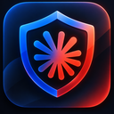

RuClaude · 1.0.0
Советы по использованию
Несколько рекомендаций для более предсказуемой работы Claude при подключении через VPN.
Проверяйте подключение
Что полезно сделать перед открытием Claude
- VPN: убедитесь, что публичный IP относится к выбранной стране.
- Защита от утечек: проверьте WebRTC, IPv6 и DNS; используйте системный kill switch, если он доступен.
Дополнительные рекомендации
Для последовательных настроек браузера и аккаунта
- Часовой пояс: желательно согласовать с регионом IP.
- Язык: можно выбрать язык, распространённый в стране IP.
- Телефон и карта: используйте свои действительные данные; совпадение их страны со страной VPN не является универсальным требованием.
- Аккаунт: избегайте подозрительной активности и следуйте правилам сервиса; вход с нескольких устройств сам по себе не запрещён.